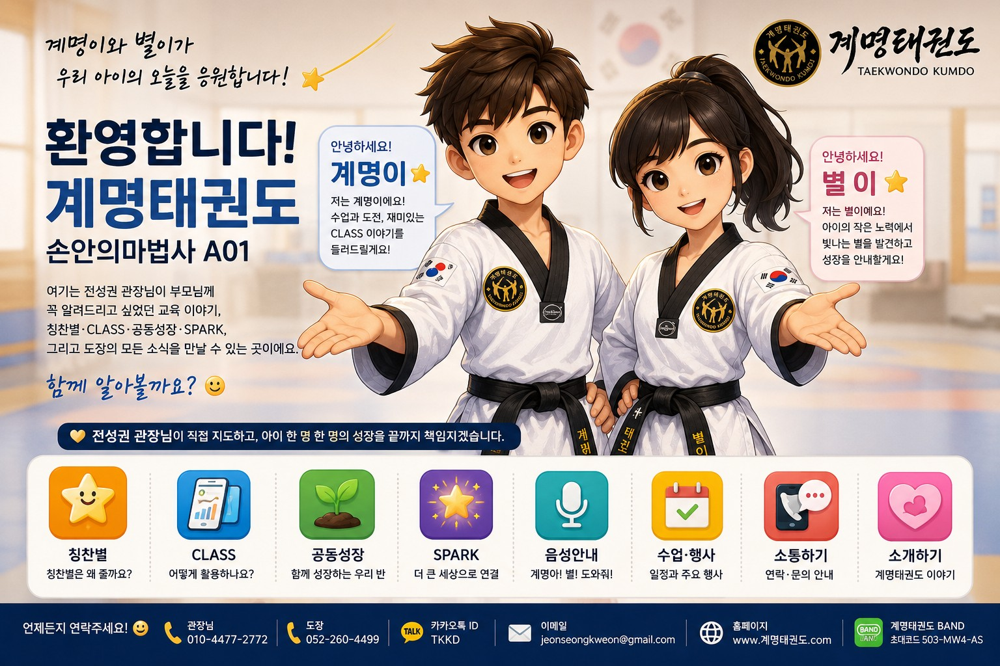
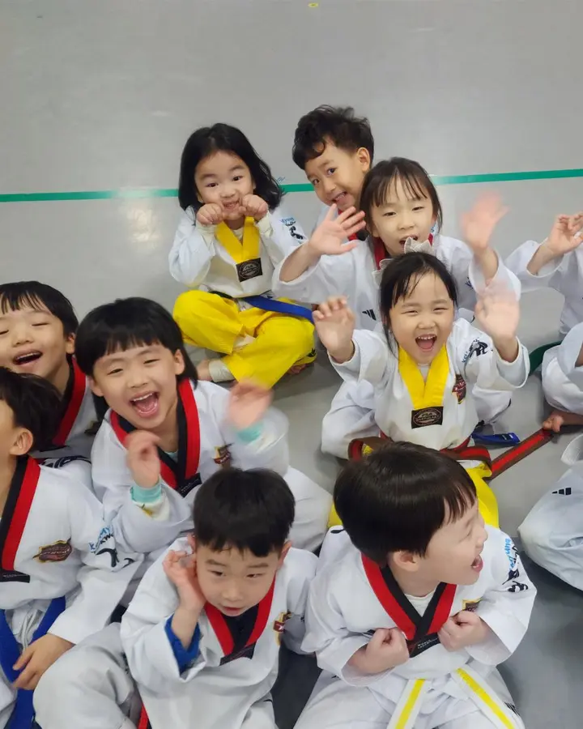
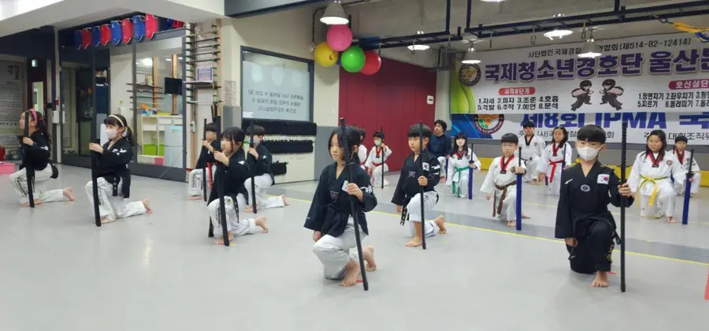
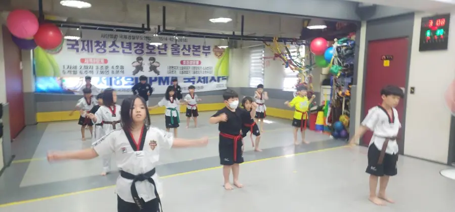
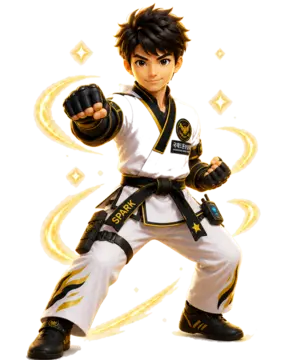

계명태권도 학부모님께
관장님이 꼭 전하고 싶었던
우리 아이의 성장 이야기
안녕하세요. 계명태권도 관장 전성권입니다. 평소 수업과 교육에 대해 꼭 말씀드리고 싶었던 이야기를 이 작은 공간에 담았습니다.

별이 아이의 작은 노력에서 빛나는 별을 찾아드릴게요!
계명이 궁금한 것부터 누르거나 천천히 내려가 보세요!
01 · 우리 아이 교육
우리 아이는 무엇을 배우나요?
잘하는 아이만 칭찬하는 것이 아니라 어제보다 한 걸음 성장한 순간을 찾아주는 것이 계명태권도의 교육입니다.
📸 수업 모습 보기 눌러서 펼치기
즐겁게 배우고, 힘차게 성장합니다
등원·인사준비운동기본기미트·품새칭찬별정리·인사



더 많은 수업 사진과 영상은 계명태권도 홈페이지에서 확인하실 수 있습니다.
02 · 계명태권도 칭찬별
별은 아이가 도장에 들어오는 순간부터 시작됩니다
⭐
칭찬별은 단순한 점수나 순위가 아닙니다.
아이의 작은 변화를 그 순간 바로 발견하고, 아이가 직접 보고 느끼도록 만든 계명태권도의 교육방법입니다.
도장에 도착하면
계명태권도가 직접 만든 출석 프로그램으로 등원이 확인됩니다.
부모님께는
아이의 출석을 알리는 문자가 발송됩니다.
TV 화면에는
음악과 효과음과 함께 아이의 STAR 카드가 바로 나타납니다.
그 순간부터
수업 속 노력과 좋은 행동이 칭찬별로 기록됩니다.
어떤 순간에 별을 받을까요?
❤️ 인성별🥋 자세별🔥 도전별🤝 배려별🎯 집중별🎮 게임별
관장님의 말 한마디
“우리 아이, 자세별!”
🎙️ → ⭐ +1 → 📺 TV에 바로 반영
관장님이 수업 중 아이의 이름과 별을 말하면 AI 보조사범이 알아듣고 별을 올립니다. 변화는 TV 화면에 실시간으로 나타나고, 아이들의 카드는 별 수에 따라 보기 좋게 정돈됩니다.
⭐ 칭찬별을 더 자세히 알아보기
아이는 칭찬받은 순간을 자신의 카드에서 바로 확인합니다. 작은 성공이 눈앞에서 별이 되고, 그 별은 자신감과 다음 도전으로 이어집니다. 혼자 받은 별은 우리 반 공동목표에도 보태집니다.
03 · 관장님의 수업을 돕는 CLASS
말 한마디로 움직이는
특별한 AI 보조사범
CLASS는 아이 한 명 한 명을 더 세심하게 보고 칭찬하면서도, 관장님이 아이들과 눈을 맞추고 수업에 집중할 수 있도록 돕는 계명태권도 전용 수업도구입니다.
출석→문자→TV 카드→칭찬별→공동성장
수업에 필요한 도구도 말로 불러냅니다
35년 지도 경험에서 태어난 수업도구
CLASS는 기계를 보여주기 위해 만든 프로그램이 아닙니다. 35년 동안 아이들을 지도해 온 전성권 관장의 수업 노하우를 담아, 아이들은 더 즐겁게 참여하고 관장님은 작은 변화도 놓치지 않도록 만든 특별한 수업 보조 프로그램입니다.
04 · 함께 자라는 우리 반
혼자 잘하는 것에서
함께 성장하는 것으로
별이 별을 제일 많이 받은 아이만 좋은 걸까?
계명이 아니야. 우리 반이 함께 성장하는 것도 중요하지!

혼자 잘하는 것도 중요하지만, 친구들의 별이 하나씩 모이면 우리 반의 힘이 됩니다. 그날의 공동목표를 달성할 때마다 화면 속 캐릭터가 다음 단계로 성장하고, 아이들은 서로 응원하며 즐겁게 운동합니다.
05 · 작은 별이 더 큰 세상으로
이 작은 별이
도장 밖으로 나가면?
게임에서 아이가 성장하면 레벨이 올라가고 기록이 남습니다. 그렇다면 현실에서 운동하고, 배우고, 도전하고, 친구를 돕고, 좋은 일을 한 성장도 기록할 수 있지 않을까요?
⭐칭찬🌱도전❤️실천✨SPARK🌍더 큰 세상
✨ SPARK 1분 설명
SPARK는 아이가 현실에서 실천한 노력과 도전을 성장의 기록으로 연결하는 프로그램입니다.
👦 우리 아이는 어떻게 참여하나요?
도장 안에서는 칭찬별과 작은 도전에서 시작합니다. 이후 운동·배움·도움·좋은 실천으로 범위를 넓혀갑니다.
06 · 행사와 아이들의 추억
수련을 넘어, 함께 만든 소중한 경험
07 · 계명이와 별이에게 말해보세요
궁금한 곳을 말로 찾아드립니다
“칭찬별 알려줘” · “SPARK가 뭐야?” · “관장님께 전화”

전성권 관장의 이야기
아이의 작은 변화를 발견하는 것부터 교육은 시작됩니다.
태권도 기술 하나를 더 가르치는 것만큼, 아이가 노력하고 도전하는 순간을 발견하고 바로 칭찬해 주는 것이 중요합니다.
전성권 관장 자세히 보기 →08 · 전성권 관장 소개
35년의 지도 경험을
새로운 교육방법과 연결합니다
- 계명태권도 관장
- 전 명지대학교 겸임교수
- 미국 대통령 스포츠활동상 수상
- 태권검도 창시자
“아이들과 함께하는 시간이 즐겁습니다. 앞으로도 부모님의 마음으로 아이 한 명 한 명의 성장을 살피겠습니다.”전성권 관장
09 · 학부모님과 바로 소통하기
언제든지 연락해 주세요
♡
10 · 함께하기
계명태권도를 소개하고 싶은 분이 있으신가요?
계명태권도의 교육 이야기를 공용 소개 링크로 간편하게 전달할 수 있습니다.
별이 끝까지 함께해 주셔서 감사합니다.
계명이 내일도 아이들과 신나게 운동할게요!
“소중한 자녀를 믿고 맡겨주셔서 감사합니다.”
전성권 관장
계명이와 별이가우리 아이의 오늘을 응원합니다.